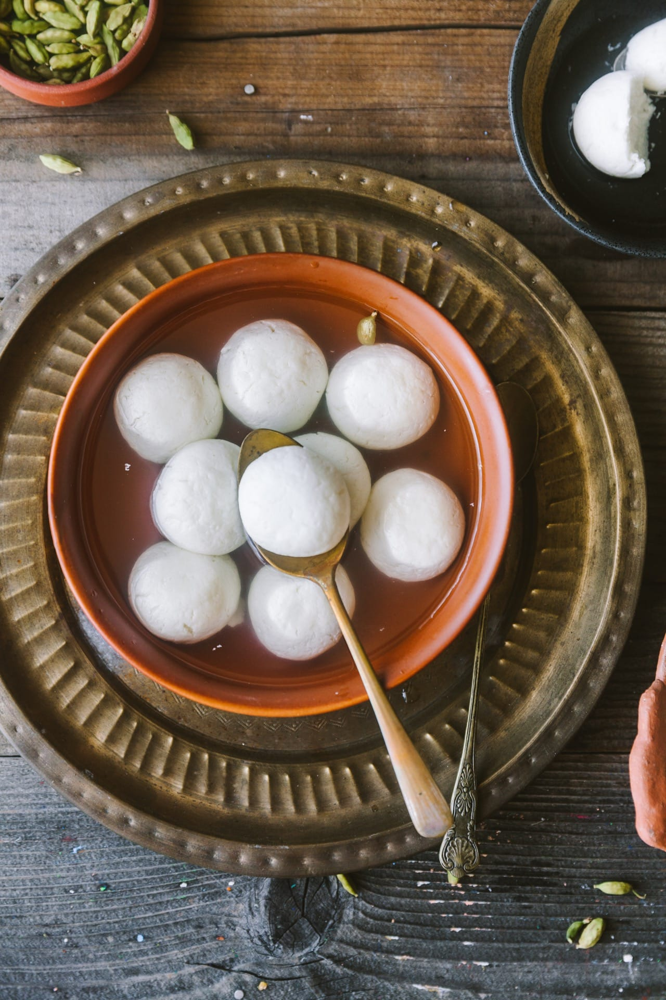

Roshogolla
🇮🇳 Cuisine: India / Bengali Sweet

Roshogolla is an iconic Bengali dessert featuring soft, spongy cottage cheese balls soaked in fragrant sugar syrup. These delicate white spheres melt in your mouth, offering the perfect balance of sweetness and texture. A beloved treat that's perfect for celebrations or as a refreshing end to any meal.
🛒 Ingredients
1 litre full-fat milk
2 tbsp lemon juice or white vinegar
2 cups sugar
4 cups water
2–3 drops rose water or cardamom essence (optional)
👨🍳 Instructions
- Boil milk in a heavy-bottomed pan. Add lemon juice slowly while stirring until milk curdles and whey separates. Strain through muslin cloth and rinse under cold water. Hang for 30 minutes to drain excess water.
- Transfer drained chenna to a clean surface and knead for 8–10 minutes until smooth and slightly sticky. Divide and roll into small smooth balls ensuring no cracks appear.
- In a wide pan, add sugar and water. Bring to a boil and make sure sugar fully dissolves to create a clear syrup.
- Gently drop the chenna balls into the boiling syrup, spacing them out. Cover and cook on medium heat for 15–20 minutes. They will expand and become spongy.
- Let them cool in the syrup. Add a few drops of rose water or cardamom essence if desired. Serve chilled in the syrup.
🍽️ Serving Tip
Serve chilled in sugar syrup for the best experience. Perfect as a refreshing dessert after meals or during festive celebrations!